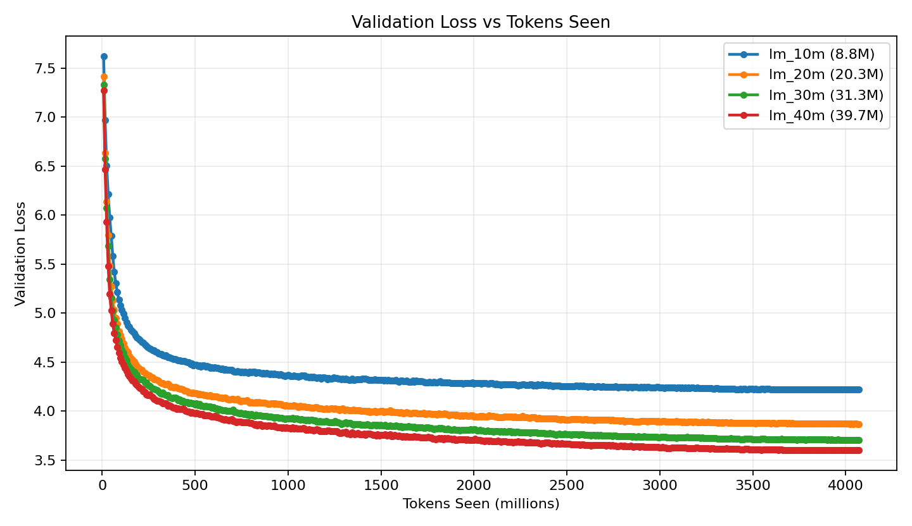
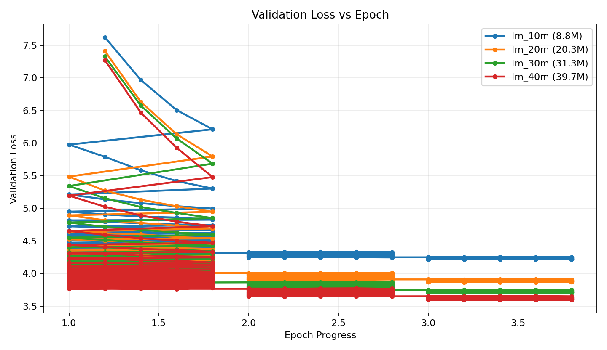

1
Base language first
OCR, instruction parsing, and autocomplete are deliberately paused until continuation quality is stable.
Stage 1 language ablation complete
A controlled study of 9M, 20M, 31M, and 40M parameter decoder-only language models trained from scratch on packed prose. The current winner is clear; the next bottleneck is cleaner data.
Can a very small local decoder learn useful language if the training setup is disciplined enough?
OCR, instruction parsing, and autocomplete are deliberately paused until continuation quality is stable.
Tokenizer, data, context, optimizer, validation split, and token budget stay fixed while capacity changes.
Every run is judged with validation loss, perplexity, speed, plots, and fixed prompt samples.
The project moved from a mixed-stage training failure to a clearer language-modeling baseline.
A roughly 20M decoder completed LM, OCR/instruction, and autocomplete stages, but generation repeated tokens and fell into subword loops.
0 contributed to loss instead of being ignored.The training plan switched to packed token chunks, correct ignored labels, no label smoothing, and a controlled model-size comparison.
Each model trained for 248,500 steps on the same lm_prose corpus, seeing 4.071B token slots over three epochs.
The ranking is clean: larger models reached lower validation loss and lower perplexity under the same setup.
| Model | Params | Final val | Best ppl | Tokens/sec |
|---|---|---|---|---|
| 10M | 8.8M | 4.2208 | 67.88 | 40,208 |
| 20M | 20.3M | 3.8677 | 47.83 | 21,438 |
| 30M | 31.3M | 3.7047 | 40.62 | 13,764 |
| 40M | 39.7M | 3.6010 | 36.55 | 11,350 |
Plots are generated from local checkpoint logs and published with the page.

The 40M curve stays below the smaller models after the same cumulative token budget.

All models improve, but larger capacity consistently wins by held-out validation loss.
The experiment is now a useful baseline, not a finished decoder.
The model can produce readable English continuations, but the language is still shallow, generic, repetitive, and biased toward app-description style. Task finetuning should still wait.
The best place to visit in => the world. The best place to visit is where you can easily find and view more than one hundred people who can be visiting. A smartphone camera app can => be installed by using its iPhone or iPad. A mobile phone is a device that uses an iOS device... Machine learning is useful because => you are not only an engineer, but also a computer scientist. Features: - Easy to use, easy to use...
The data pipeline is working; the main bottleneck has moved to corpus quality and balance.
The 40M model has the best validation loss and about 46 percent lower final perplexity than the 10M model.
The 10M model saw the most tokens per parameter and still had the worst validation loss.
The best loss still produced shallow continuations, so fixed prompt checks remain necessary.
More epochs on the same corpus will likely strengthen the same generic style bias.